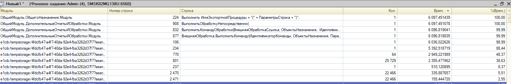
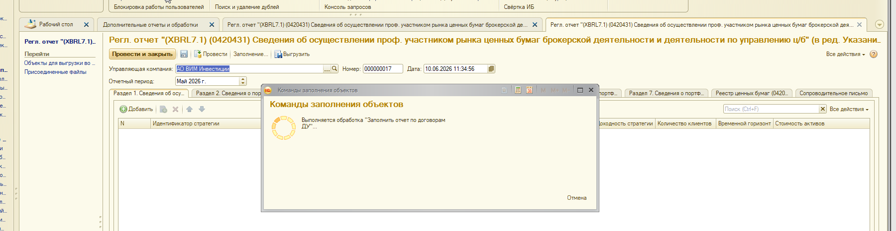
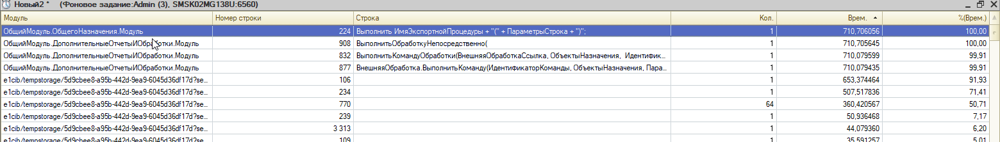

IMDEV-9005 — Сравнение замеров БЫЛО / СТАЛО
Источник: Замеры 431 форма Т-1 в журнал регистрации.docx |
Обработка: NEW_Оптимизация/внЗаполнениеРеглОтчетаПоДоговорамДУ_0420431_71 |
Сгенерирован: 10.06.2026
Введение
Отчет сопоставляет производительность заполнения регламентированного отчета
0420431 (XBRL 7.1) до и после оптимизаций IMDEV-9005.
Три уровня сравнения:
- ДУ, среда т-1 (май 2026) — старый алгоритм vs оптимизированная обработка (финальный прогон 10.06.2026).
- МО, PROD_AVC_Retail_MO (апрель 2026) — замеры TWR per-strategy: база, оптимизация обработки ДУ, исправление индекса
MV в РасчетTWR.
- Регрессия данных — сравнение документов 0420431 обработкой
внСравнение0420431.
Вывод из docx: «Результат оптимизации удовлетворительный» —
ускорение ~9x по чистому времени профилировщика, данные отчета идентичны.
Технология замеров
1. COM-подключение (база ДУ, фоновое задание)
Заполнение 0420431 выполняется в базе ДУ. Обработка подключается к МО через COM-коннектор.
Параметры подключения из среды т-1:
| Параметр | Значение |
|---|
| Srvr | SMSK02MG138U |
| Ref (ДУ) | AVC_PP_DU |
| App | PyCOM (для внешних обработок через COM) |
| Locale | ru_RU |
| Фоновое задание | Admin (3), SMSK02MG138U:6560 |
Инструменты измерения
| Инструмент | Где | Что фиксирует |
|---|
| Замер производительности 1С | Конфигуратор / отладчик | Строки BSL, вызовы, чистое время |
| Журнал регистрации | ДУ | Событие IMDEV-9005.Замеры, этапы заполнения |
ERF внVTBAM_TWR_MANDATE | МО retail | TWR per-strategy, таблица замеров по стратегиям |
Обработка внСравнение0420431 | ДУ | Регрессия: идентичность данных двух документов |
Важно про обработки: при COM-вызове внешней обработки строка подключения должна содержать
App и Locale. Замер через фоновое задание отражает реальный прогон без UI.
Сводная статистика: БЫЛО vs СТАЛО
1 ч 42 мин
БЫЛО (профилировщик ДУ)
6 097 сек, май 2026, старый алгоритм
11,8 мин
СТАЛО (профилировщик ДУ)
711 сек чистого, ~20 мин на стене
-88%
Ускорение (чистое время)
коэффициент ~8,6x
Главные метрики сравнения
| Метрика |
БЫЛО |
СТАЛО |
Изменение |
Комментарий |
| Общее время (профилировщик ДУ) |
6 097 сек |
711 сек |
-88,3% |
Стр. 106 ЗаполнитьРазделыОтчета |
НайтиСтроки стр. 801 (доходность) |
2 355 сек (25 729 выз.) |
~34 сек (стр. 781) |
-98,6% |
Заменено на Соответствие (COM-индекс) |
TWR стр. 770 (64 COM-вызова) |
2 949 сек |
360 сек |
-87,8% |
Ускорение в МО (индекс MV по полю Разделитель) |
ЗаполнитьРаздел_1 стр. 237 |
510 сек |
51 сек |
-90,0% |
Индекс ИндексСтрокПоГруппе вместо НайтиСтроки |
НайтиСтроки стр. 2470+2471 |
491 сек (44 932 выз.) |
в составе 51 сек |
устранено |
Опт. раздел 1.2 |
| Регрессия данных 0420431 |
док. 000000016 |
док. 000000017 |
идентичны |
Кроме Номер/Дата/Ссылка |
Детали тестов — БЫЛО (старый алгоритм)
БЫЛО Среда т-1, период май 2026, старт 17:50, финиш 09.06.2026 19:42:53 (~1 ч 54 мин на стене).
| Стр. | Операция | Вызовов | Сек | % |
|---|
| 106 | ЗаполнитьРазделыОтчета(...) | 1 | 6 036 | 99,0 |
| 234 | СформироватьВТ_ДанныеПоСтратегиям(...) | 1 | 5 393 | 88,4 |
| 770 | ВТБ_РасчетДоходностиСервер.TWR(...) | 64 | 2 949 | 48,4 |
| 801 | ДанныеДоходности.НайтиСтроки(Отбор) | 25 729 | 2 355 | 38,6 |
| 237 | ЗаполнитьРаздел_1(...) | 1 | 510 | 8,4 |
| 2470 | СведенияПоДоговорам.НайтиСтроки(Отбор) | 22 466 | 336 | 5,5 |
| 2471 | ...Загруженные.НайтиСтроки(Отбор).Количество() | 22 466 | 155 | 2,6 |
ДанныеДоходности = Соединение.ВТБ_РасчетДоходностиСервер.TWR(
НачалоПериодаTWR, ОтчетОбъект.КонецПериода,
Соединение.Справочники.Валюты.RUB, ВознаграждениеКакПассив,
?(ТипУчета = "Плановый", Истина, Ложь),
МассивМандатов, ТекущаяСтрока.Стратегия, Группировка,
КоммисияКакПассив, НДФЛКакПассив);
Профилировщик ДУ — общая картина (старый алгоритм)

Профилировщик ДУ — детализация TWR и НайтиСтроки

БЫЛО Узкое место в МО — Отчет.VTBAM_MWR_TWR, стр. 2275:
СтрокиРазделителя = MV.НайтиСтроки(ПараметрыПоискаСтрок);
| Стр. | Код | Вызовов | Сек | % |
|---|
| 1940 | ДанныеTWR = РасчетTWR(MV, ВводыВыводы) | 1 | 11 353 | 84,9 |
| 2275 | MV.НайтиСтроки(ПараметрыПоискаСтрок) | 14 869 | 1 333 | 90,9 |

Замеры МО (PROD_AVC_Retail_MO) — TWR per-strategy
Период 01.04.2026 - 30.04.2026, режим MANDATE (per-strategy), ERF
внVTBAM_TWR_MANDATE. Три стратегии SS-010 / SS-020 / SS-030.
| Стратегия |
Мандатов |
БЫЛО, сек |
СТАЛО, сек |
СТАЛО-2, сек |
Выигрыш (БЫЛО→СТАЛО-2) |
| SS-010 Рост под защитой (3 Года) |
13 074 |
1 215,8 |
402,4 |
227,6 |
-81,3% |
| SS-020 Рост под защитой (5 Лет) |
1 935 |
56,6 |
42,2 |
30,8 |
-45,6% |
| SS-030 Рост под защитой (ИИС 5 Лет) |
404 |
8,2 |
10,0 |
7,7 |
-6,1% |
| ИТОГО (3 стратегии) |
15 413 |
1 280,6 |
454,6 |
266,1 |
-79,2% |
СТАЛО-2 (МО): исправлен индекс таблицы MV — поиск
НайтиСтроки выполняется только по полю Разделитель, поэтому
составной индекс "Разделитель, Период" не использовался платформой.
| Вариант | Код |
|---|
| БЫЛО | MV.Индексы.Добавить("Разделитель, Период"); |
| СТАЛО | MV.Индексы.Добавить("Разделитель"); |
Стр. 2275 MV.НайтиСтроки (1 333 сек, 90,9%) исчезла из топа профилировщика.
Алгоритм РасчетTWR не менялся — одна строка в конфигурации МО.
Профилировщик МО после исправления индекса (стр. 2275 больше не доминирует)

Детали тестов — СТАЛО (финальный прогон ДУ)
СТАЛО 10.06.2026, старт 11:30, финиш 11:49 (~20 мин на стене).
Период отчета: май 2026. Документ 000000017.
Запуск заполнения оптимизированной обработкой

| Стр. | Операция | Вызовов | Сек | % | БЫЛО, сек |
|---|
| 106 | ЗаполнитьРазделыОтчета(...) | 1 | 653 | 91,9 | 6 036 |
| 234 | СформироватьВТ_ДанныеПоСтратегиям(...) | 1 | 508 | 71,4 | 5 393 |
| 770 | ВТБ_РасчетДоходностиСервер.TWR(...) | 64 | 360 | 50,7 | 2 949 |
| 781 | ДоходностьПоМандатам.Получить(Мандат) (индекс) | 1 669 097 | 34 | 4,9 | 2 355 (стр.801) |
| 239 | ЗаполнитьРаздел_1(...) | 1 | 51 | 7,2 | 510 |
| 3313 | ЗаполнитьРаздел_4(...) | 1 | 44 | 6,2 | — |
Профилировщик — общая картина (фоновое задание Admin)

Профилировщик — детализация: TWR 360 сек, индекс 781 вместо НайтиСтроки 801

Регрессионное сравнение данных
РЕГРЕССИЯ Обработка внСравнение0420431, режим «Только расхождения».
| Документ | Номер | Дата | Алгоритм |
|---|
| БЫЛО (эталон) | 000000016 | 09.06.2026 20:24:09 | старый |
| СТАЛО (оптимизация) | 000000017 | 10.06.2026 11:34:56 | NEW_Оптимизация |
Результат: Документы идентичны (кроме Номер / Дата / Ссылка)
Скриншот из docx — регрессионное сравнение

Что дало ускорение
| Оптимизация | Где | БЫЛО | СТАЛО |
|---|
Индекс ДоходностьПоМандатам (COM-Соответствие) |
ДУ стр. 801 |
2 355 сек |
~34 сек (стр. 781) |
Индекс ИндексСтрокПоГруппе в разделе 1.2 |
ДУ стр. 2470/2471 |
491 сек |
в составе 51 сек раздела 1 |
Индекс MV: "Разделитель" вместо "Разделитель, Период" |
МО стр. 2275 |
1 333 сек (90,9% РасчетTWR) |
стр. 2275 ушла из топа; TWR retail 1 281 → 266 сек |
| Режим MANDATE per-strategy (без batch) |
ДУ стр. 770 |
64 вызова сохранены; ускорение за счет МО, не сокращения вызовов |
Выводы
- Ускорение подтверждено: чистое время профилировщика снизилось с 6 097 сек до 711 сек (~8,6x), на стене — с ~1 ч 54 мин до ~20 мин.
- Узкое место стр. 801 устранено:
НайтиСтроки (25 729 вызовов, 2 355 сек) заменен индексом ДоходностьПоМандатам (~34 сек).
- Раздел 1 ускорен в 10 раз: 510 сек → 51 сек за счет индексации групп в разделе 1.2.
- TWR в МО: на retail-базе суммарное время 3 стратегий снижено с 1 281 сек до 266 сек (-79%) после исправления индекса
MV.Индексы.Добавить("Разделитель").
- Регрессия пройдена: документы 000000016 и 000000017 идентичны по данным — оптимизация не меняет результат отчета.
- Остаточный резерв: TWR (стр. 770, 360 сек, 51% замера) остается главным потребителем; дальнейший выигрыш — при переходе на batch
MANDATE_STRATEGY (сокращение 64 COM-вызовов).
IMDEV-9005 | БЫЛО/СТАЛО | т-1 AVC_PP_DU + PROD_AVC_Retail_MO | источник: docx 10.06.2026